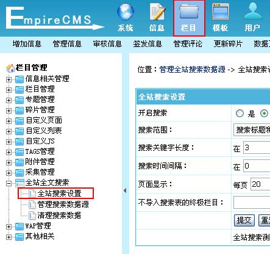
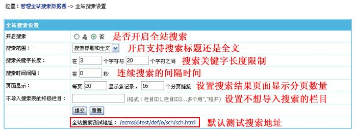
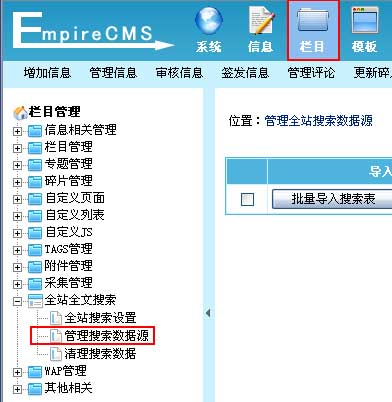
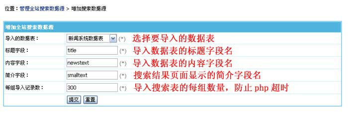
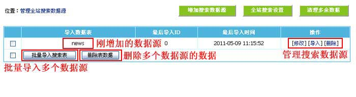
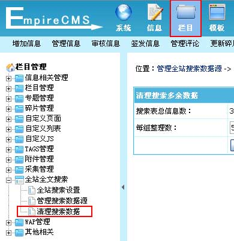
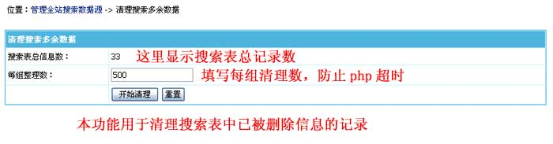
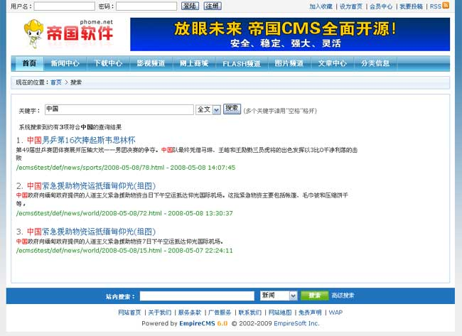

| 一、全站搜索介绍： |
| 1、全站全文搜索说明： 帝国CMS6.0以上版本新增全站全文搜索功能，采用中文分词、编码转码和Mysql全文检索技术结合，搜索非常高效。解决了同时搜索多个表的数据、搜索存文本模型的内容、在大数据量情况下的全文搜索解决方案。 用户可以将各个数据表数据导入全文搜索，包括存文本模型、主表或副表字段，支持设置导入字段及多表批量导入；并增加清理搜索多余数据功能，可将已经删除或失效信息删除。 全文搜索除了全站搜索，还可以指定只搜索某一栏目，支持多个关键字同时搜索。 2、增加搜索数据源的步骤： (1)、增加搜索数据源； (2)、导入搜索数据源； (3)、完成。 |
| 二、设置全站搜索： | ||||||||||||
| 1、登录后台，单击“栏目”菜单，选择“全站搜索设置”子菜单，进入全站搜索设置界面： | ||||||||||||
|  | ||||||||||||
| 2、进入全站搜索设置界面： | ||||||||||||
|  | ||||||||||||
|
| 三、增加搜索数据源 | ||||||||||
| (一)、搜索数据源介绍： | ||||||||||
| 设置搜索数据的来源表，将数据源的数据导入到搜索表，全站搜索才能搜索到记录，所以更新信息后要重新导入数据源，以将新加的信息导入搜索表。 | ||||||||||
| (二)、增加搜索数据源： | ||||||||||
| 1、登录后台，单击“栏目”菜单，选择“管理搜索数据源”子菜单，进入管理搜索数据源界面： | ||||||||||
|  | ||||||||||
| 2、进入管理搜索数据源，点击“增加搜索数据源”按钮进入增加搜索数据源界面： | ||||||||||
| 3、进入增加搜索数据源界面： | ||||||||||
|  | ||||||||||
|
| 四、管理搜索数据源： |
| 1、增加搜索数据源后，进入管理搜索数据源界面： |
|  |
| 2、以后数据源表有增加信息，可以点“导入”将新信息更新到搜索表，这样全站搜索就能搜索到。 |
| 五、清理搜索多余数据： |
| 1、登录后台，单击“栏目”菜单，选择“清理搜索数据”子菜单，进入清理搜索数据界面： |
|  |
| 2、进入清理搜索数据界面： |
|  |
| 六、全站搜索表单语法说明： | |
| 1、全站搜索表单语法说明： | |
| 搜索表单提交地址：/e/sch/index.php 表单提交方式用：GET keyboard：搜索关键字变量(前台搜索多个关键字可以用空格隔开)。 field：搜索字段变量，0为按后台设置搜索;1为按全文搜索;2为按标题搜索;3为按内容搜索。 classid：指定要搜索的栏目ID，多个栏目ID用逗号隔开。 |
|
2、表单范例： |
|
|
|
| 3、全站搜索结果页面： | |
| (1)、全站搜索结果模板修改：后台>模板>公共模板>修改“全站搜索模板”。 | |
| (2)、搜索结果页面预览： | |
|  |
| 相关链接： |
| 1、帝国网站管理系统功能解密之全站全文搜索功能 |